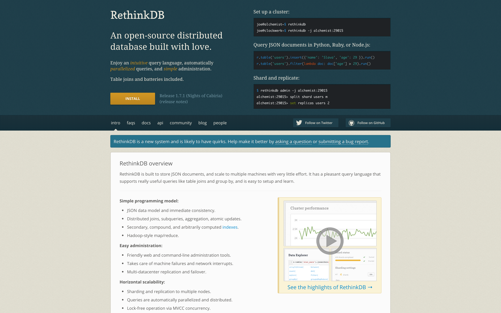
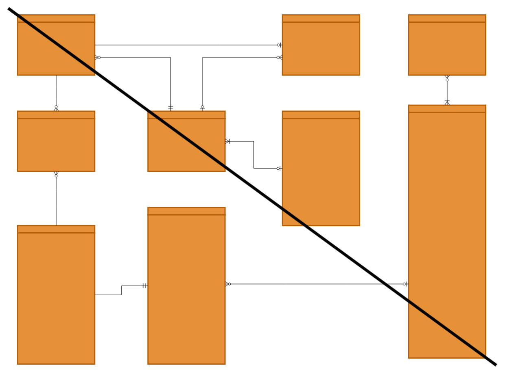
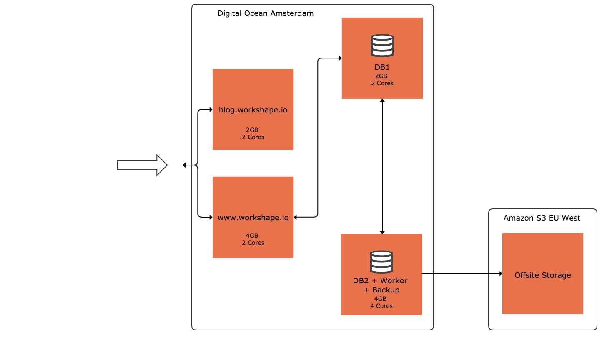
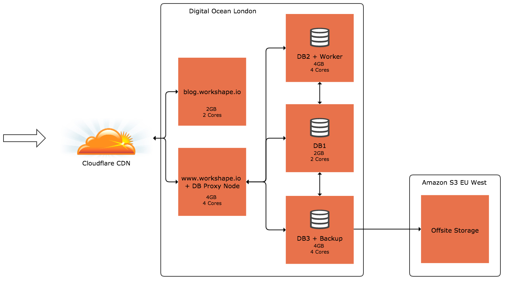
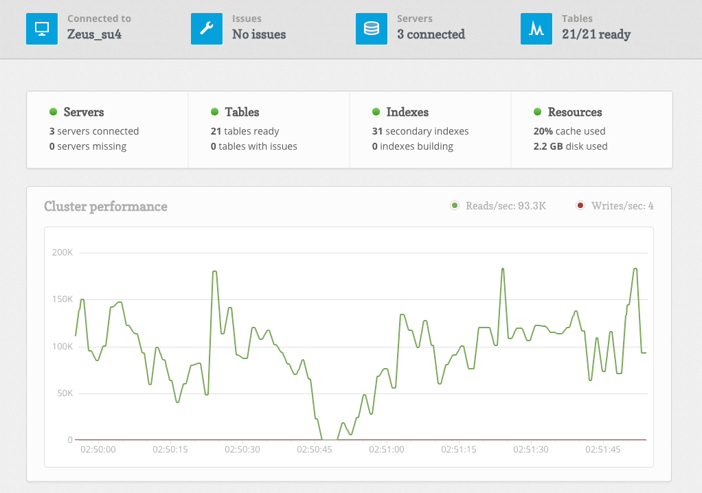
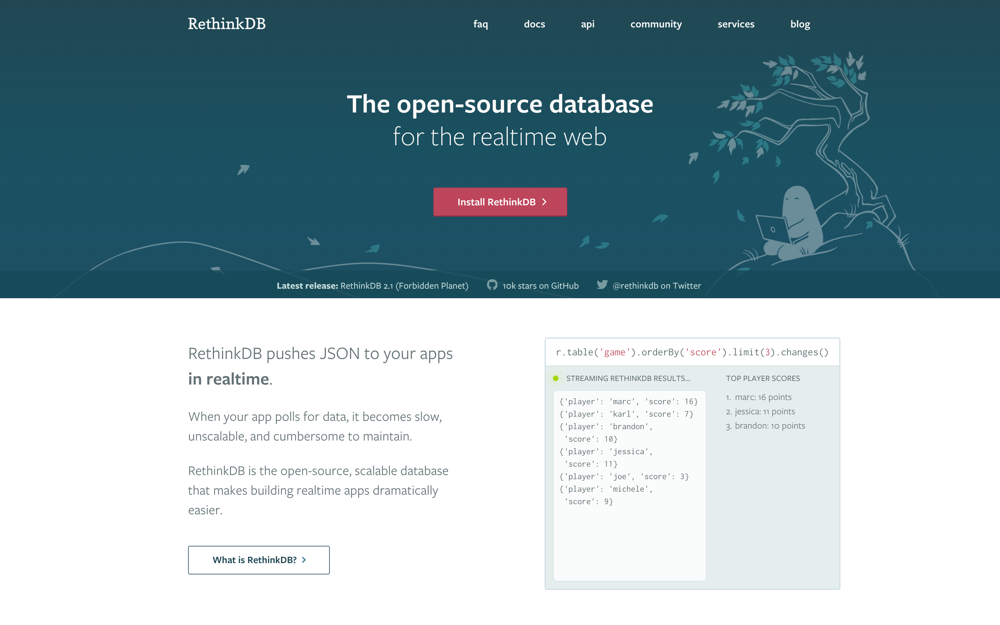

Workshape.io's journey with RethinkDB
Gordon Dent / workshape.io / @gordyMD
- Hiring platform for Engineers
- Idea in 2013 / Launch in 2014
- 14k engineers / 500 companies
- 15% growth month-on-month


r
.db( 'wsdev' )
.table( 'matches' )
.getAll( 'isnt-this-nice', { index: 'organisation_id' } )
.filter( row => row( 'expiry' ).gt( r.now() ) )
.orderBy( r.desc( 'score' ) )
.limit( 10 )
r
.db( 'wsdev' )
.table( 'matches' )
.getAll( 'isnt-it-just', { index: 'organisation_id' } )
.filter( row => row( 'expiry' ).gt( r.now() ) )
.eqJoin( 'person_id', r.table('person'))
.pluck({
left: [ 'id', 'score', 'created', 'person_id' ],
right: [ 'first_name', 'last_name', 'title' ]
})
.zip()
.orderBy( r.desc( 'score' ) )
.limit( 10 )
- Horizontal Scaling
- Geospatial Functionality
- Powerful Admin Tool



- 2GB RAM + SWAP
- Use secondary indexes and getAll()
- Avoid innerJoin() and outerJoin()
- Nested vs Relational

db.changes(
r.table('account').filter({type: 'person'}),
function(err, x) {
if (!x.old_val) {
emit('new-person', x.new_val);
}
}
);
- React
- Redux
- RethinkDB
- Express
https://github.com/GordyD/3ree
Thank you for listening
Gordon Dent / workshape.io / @gordyMD